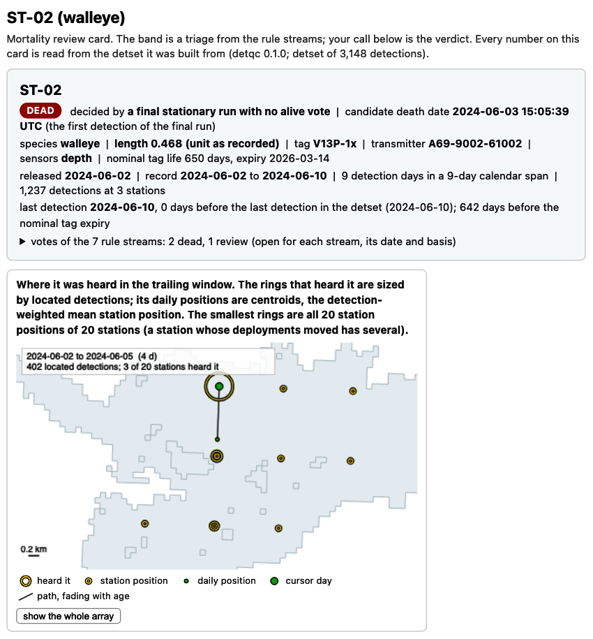
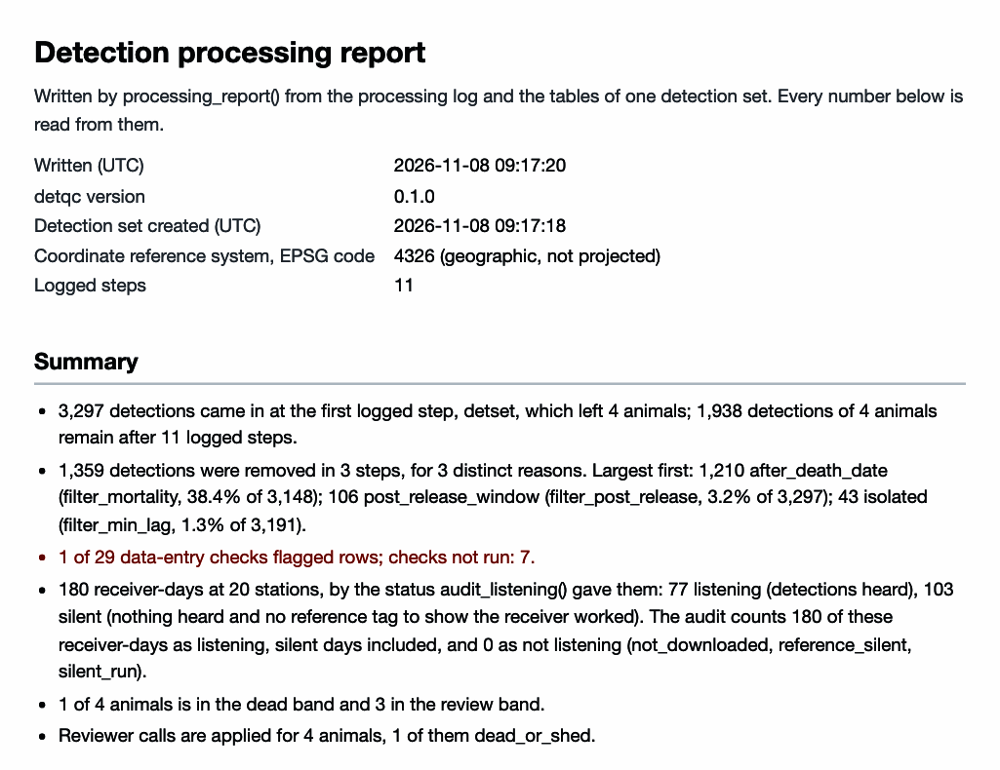
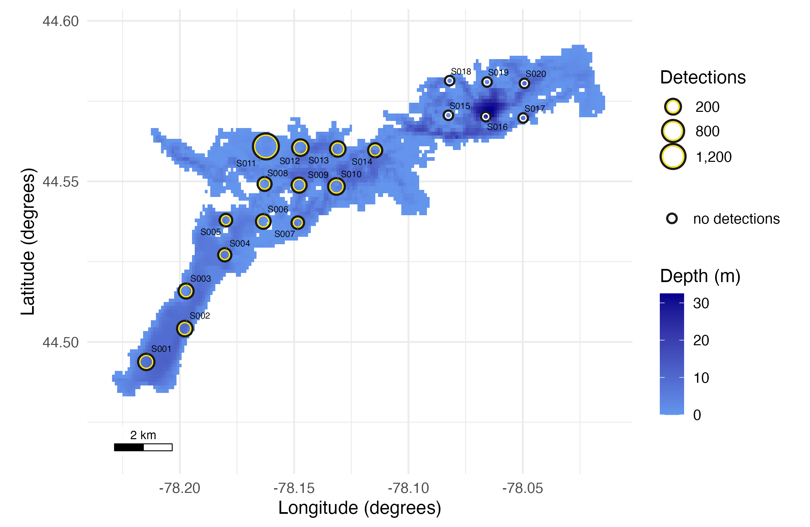
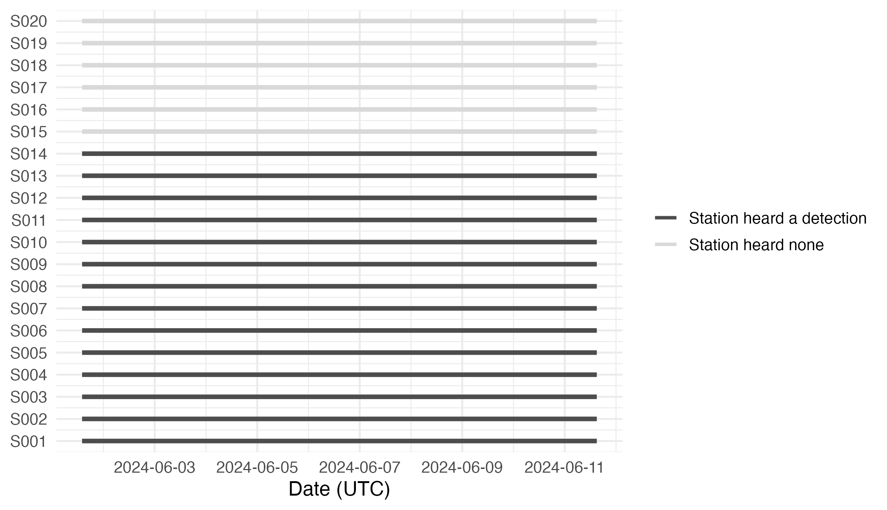
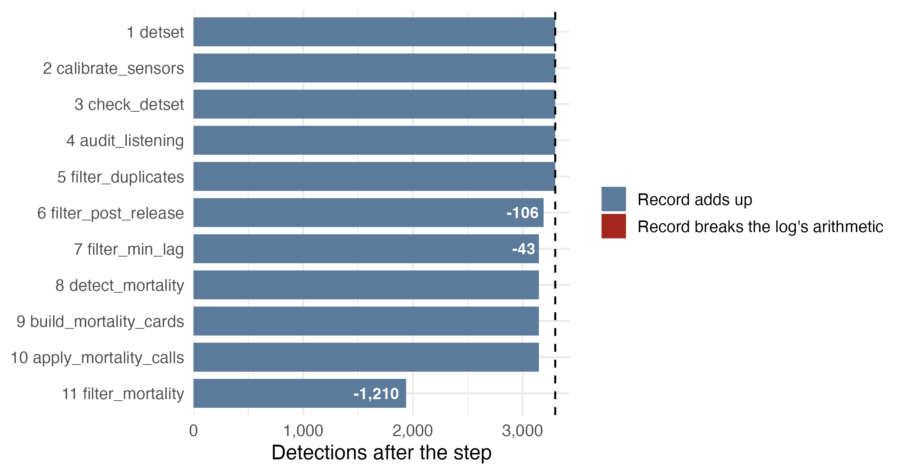

detqc takes an acoustic telemetry study from its detection, receiver and tagging files to a checked and filtered detection set, ready to analyse or hand to another tool. It reads OTN, GLATOS, VUE and VDAT files, checks them for data-entry errors and filters the detections, and it logs every step with the detections it removed. The review cards are one HTML page per animal the mortality rules flag, on which you call the animal alive, dead or shed. The processing report is one HTML page that records every file read, check, filter and call, with its counts.


The fuller workflows are in three articles. Base processing: read, check, and filter telemetry data reads your own files and runs every check and filter. Mortality filtering: base algorithm and review cards sets the rules, writes the review cards and brings your calls back. Export the dataset and generate a summary report hands the set to other tools and writes the report.
This page runs the package once, end to end, on the Stoney Lake example files included with it: a synthetic study of four walleye tracked by 20 receivers from 2 to 10 June 2024. Each step links to the article that goes deeper.
1. Read the files
The import functions recognise each file format from its column names and return every time in UTC; Supported file formats lists them, with column maps for a file of your own.
library(detqc)
# Locate the example files included with the package
extdata_dir <- system.file("extdata", package = "detqc")
in_file <- function(name) file.path(extdata_dir, name)
# Read the tag sheet: each transmitter's delays and sensor calibration
specs <- read_tag_specs(in_file("stoney_tag_specs.csv"))
# Read the detection export
detections <- read_detections(in_file("stoney_detections.csv"))
# Read the receiver deployments, a GLATOS receiver file
deployments <- read_deployments(in_file("stoney_receivers.csv"),
format = "glatos")
# Read the tagging records, joined to the tag sheet
animals <- read_animals(in_file("stoney_detections.csv"), format = "glatos",
tag_specs = specs)
# Show each animal's transmitter, release, delays and sensor
animals[, c("animal_id", "transmitter", "release_datetime", "min_delay",
"max_delay", "sensor_type")]
#> animal_id transmitter release_datetime min_delay max_delay
#> 1 ST-02 A69-9002-61002 2024-06-02 15:30:00 120 180
#> 2 ST-04 A69-1601-61004 2024-06-02 15:30:00 120 180
#> 3 ST-03 A69-9002-61003 2024-06-02 15:30:00 120 180
#> 4 ST-01 A69-1601-61001 2024-06-02 15:30:00 120 180
#> sensor_type
#> 1 depth
#> 2 <NA>
#> 3 depth
#> 4 <NA>The tag sheet gave each transmitter its delays, and the two depth tags their sensor type.
2. Build the detection set
detset() joins the three tables, gives each detection
the station of the deployment in the water at its time, and starts the
log; calibrate_sensors() converts the raw depth counts to
metres with the tag sheet’s calibration.
# Join the three tables into one detection set and start its log
dets <- detset(detections, deployments, animals)
# Convert raw sensor values to units with the tag sheet's calibration
dets <- calibrate_sensors(dets)
# Print the detection set
dets
#> <detset> 3,297 detections of 4 animals (4 transmitters), heard on 14 of 20
#> receivers at 14 of 20 stations
#> 2024-06-02 to 2024-06-10 (UTC); 20 deployments; 4 animal rows; 220
#> receiver-days deployed (listening not audited)
#> log: 2 steps (detset, calibrate_sensors)plot_receivers() maps the stations over the depth of the
lake.
# Read the depth raster of the lake: 100 m cells, UTM zone 17N,
# depth stored as zero or negative metres, land NA
lake <- terra::rast(in_file("stoney_depth.tif"))
# Map the stations over the lake depth
plot_receivers(dets, water = lake) + theme_positionr(base_size = 13)
The 20 stations of the example; six heard none.
Every positionR map draws a receiver as a ring in the three colours
of positionr_ring_colours(), so a map from
detqc matches one from detfield or
arraydesign.
# The ring colours of a receiver that heard, one that heard nothing, and the edge
positionr_ring_colours()
#> heard silent edge
#> "#FDE725" "#FFFFFF" "#1A1A1A"3. Run the checks
check_detset() runs 30 data-entry and deployment checks
and never changes the data; What the checks
catch lists them all and plants four errors for them to find.
# Run every check; the raster as positive metres serves the land and
# depth checks
dets <- check_detset(dets, water = abs(lake))
#> The two checks against the detection field need `field`; they did not run.
# Print the checks that did not pass
checks <- dets$checks$summary
checks[checks$status != "pass", c("check", "status", "flagged", "of", "unit")]
#> check status flagged of unit
#> 11 recover_after_download not run NA NA deployments
#> 12 detections_after_download not run NA NA deployments
#> 15 receiver_silent flag 6 20 deployments
#> 16 moved_mooring not run NA NA deployments
#> 21 long_after_release not run NA NA detections
#> 25 non_utc not run NA NA deployments
#> 26 dst_jump not run NA NA receivers
#> 29 codetection_out_of_range not run NA NA co-detections
#> 30 reference_position not run NA NA detectionsreceiver_silent flags the same six stations, those that
heard none. The checks that did not run need inputs this example does
not give, such as reference tags. plot_timeline() draws
each deployment against time.
# Draw each deployment as a bar from deployment to recovery
plot_timeline(dets) + theme_positionr(base_size = 13)
plot_timeline(): each of the 20 receivers from
deployment to recovery.
Every receiver was in the water from the first to the last day of the study, so the silent stations were not out of the water; What the checks catch says what else a silent receiver can mean.
4. Audit the listening days
audit_listening() gives each receiver and day a
listening status, which the detfield
R package, the positioning component of positionR, reads. Run it before
the filters: a detection a filter removes still shows that the receiver
was listening. With no reference tags in this example,
known_listening names the receivers the field records
confirm worked; Hand off
to detfield explains each status.
# Give each receiver-day a listening status; every receiver here worked
dets <- audit_listening(dets,
known_listening = unique(dets$deployments$receiver_serial))
# Count receiver-days by status
table(dets$listening$status)
#>
#> listening silent
#> 77 103The audit covers the nine UTC days from the first to the last detection: 180 of the 220 receiver-days deployed.
A silent day, a full day with no detection, still counts as listening here, because the field records confirm the receiver worked. Receiver logs, where you have them, show which receivers were running and how many detections each counted (Receiver logs).
5. Filter the detections
filter_duplicates() removes repeated detections of one
transmitter on one receiver at one time.
# Remove repeated detections of one transmitter on one receiver
dets <- filter_duplicates(dets)filter_post_release() removes the first 6 h after each
release, while the animals recover from tagging.
# Remove the first 6 h of each animal's record, its recovery from tagging
dets <- filter_post_release(dets, hours = 6)filter_min_lag() removes false detections, those
isolated in time: a detection with no other detection of its transmitter
on its receiver within a threshold. Following Pincock (2012), the
threshold is 30 times the average delay of the tags, 4,500 s here. Isolated
detections draws the lags of this study against it.
# Set the threshold: 30 times the average delay, the mean of each tag's
# minimum and maximum delay from the tag sheet
max_lag <- 30 * mean((animals$min_delay + animals$max_delay) / 2)
max_lag
#> [1] 4500filter_min_lag() then removes the isolated detections
and logs them.
# Remove detections isolated in time beyond the threshold, or alone
dets <- filter_min_lag(dets, max_lag_s = max_lag)
# Print the log so far: detections before and after each step
detset_log(dets)[, c("step", "rows_before", "rows_after", "removed")]
#> step rows_before rows_after removed
#> 1 detset 3297 3297 0
#> 2 calibrate_sensors 3297 3297 0
#> 3 check_detset 3297 3297 0
#> 4 audit_listening 3297 3297 0
#> 5 filter_duplicates 3297 3297 0
#> 6 filter_post_release 3297 3191 106
#> 7 filter_min_lag 3191 3148 436. Detect and review mortality
detect_mortality() reads each record with a set of rule
streams and assigns each animal a candidate death date and a band: dead,
review or alive. The default temporal settings suit studies of months,
so the code scales them to this nine-day study. Mortality filtering explains each
stream and band and adds a rule of your own.
# Scale the temporal settings to nine days: a final run of 3 detection
# days and 3 calendar days, 2 flat sensor days, a record end within 2 days
mort_rules <- mortality_rules(min_days = 3, min_calendar_days = 3,
min_flat_days = 2, within_days = 2)
# Sort each animal into the dead, review or alive band
bands <- detect_mortality(dets, rules = mort_rules)
bands$bands[, c("animal_id", "band", "deciding_rule", "death_date")]
#> animal_id band deciding_rule death_date
#> 1 ST-02 dead terminal_run 2024-06-03 15:05:39
#> 2 ST-01 review terminal_run_stray 2024-06-08 00:32:54
#> 3 ST-03 review record_end <NA>
#> 4 ST-04 review record_end <NA>ST-02 falls in the dead band and the other three in review; Flag: sort the animals into mortality bands gives the rule that decides each.
review_mortality() writes one HTML review card per
animal, with an index, on which you call each animal; Open the
review cards shows how to read one. Open the four review cards
this code wrote.
# Change to a folder beside your data, such as "C:/telemetry/2024/processed".
out_dir <- tempdir()
# Make the outline of the lake for the maps on the cards
outline <- sf::st_as_sf(terra::as.polygons(terra::ifel(is.na(lake), NA, 1)))
# Write a card for every animal, dead, review and alive, and an index
dets <- review_mortality(dets, file.path(out_dir, "mortality_review"),
bands = bands, all = TRUE, open = FALSE,
control = list(outline = outline))
# List the cards written
dets$cards[, c("animal_id", "band", "checked")]
#> animal_id band checked
#> 1 ST-02 dead TRUE
#> 2 ST-01 review TRUE
#> 3 ST-03 review TRUE
#> 4 ST-04 review TRUEapply_mortality_calls() stores the calls a reviewer
exports from the index; the file below stands in for that export, with
ST-02 dead at its simulated death time.
# Write the calls: ST-02 dead at 02:00 UTC on 4 June, the other three alive
calls <- data.frame(animal_id = c("ST-01", "ST-02", "ST-03", "ST-04"),
call = c("alive", "dead_or_shed", "alive", "alive"),
death_date = c("", "2024-06-04", "", ""),
death_time = c("", "2024-06-04 02:00:00", "", ""))
calls_file <- file.path(tempdir(), "mortality_calls.csv")
write.csv(calls, calls_file, row.names = FALSE)
# Store the reviewer's calls in the detection set
dets <- apply_mortality_calls(dets, calls_file)filter_mortality() removes each dead animal’s detections
from margin_days before its death time. The default of 7
days would remove all of ST-02’s record in a nine-day study, so the cut
uses 1 day; Decide
compares the two.
# Cut ST-02's record 1 day before its death time
dets <- filter_mortality(dets, margin_days = 1)
# Print the last two log records
tail(detset_log(dets)[, c("step", "rows_before", "rows_after", "removed")], 2)
#> step rows_before rows_after removed
#> 10 apply_mortality_calls 3148 3148 0
#> 11 filter_mortality 3148 1938 12107. Export and write the report
as_detfield_input() returns the three tables
detfield reads, and write_detset() saves
the set with its log; Export adds
to_glatos(), to_actel() and
to_ato() and the files other software reads.
# Convert the detection set to the three tables detfield reads
input <- as_detfield_input(dets)
sapply(input[c("detections", "tag_delay")], nrow)
#> detections tag_delay
#> 1938 4
# Save the detection set with its log
path <- write_detset(dets, file.path(tempdir(), "stoney_detset.rds"),
overwrite = TRUE)
basename(path)
#> [1] "stoney_detset.rds"processing_report() records the whole run on one HTML
page: files, log, checks, removals by reason, and the mortality bands
and calls. Open the
processing report this code wrote.
# Write the processing report into out_dir
report <- processing_report(dets, file.path(out_dir, "processing_report.html"),
bands = bands, control = list(outline = outline))
basename(report)
#> [1] "processing_report.html"plot_attrition() draws the log as the detections left
after each step, the figure the report draws.
# Draw the detections left after each logged step
plot_attrition(dets) + theme_positionr(base_size = 13)
The detections left after each of the 11 logged steps, from 3,297 read.
The mortality cut removed 1,210 detections, more than every other
step together. The set now holds 1,938 detections, as does the included
stoney_clean.